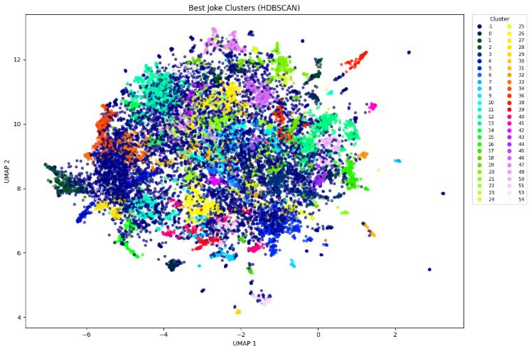
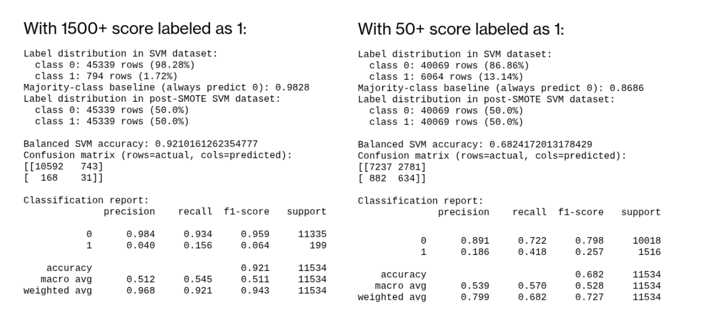
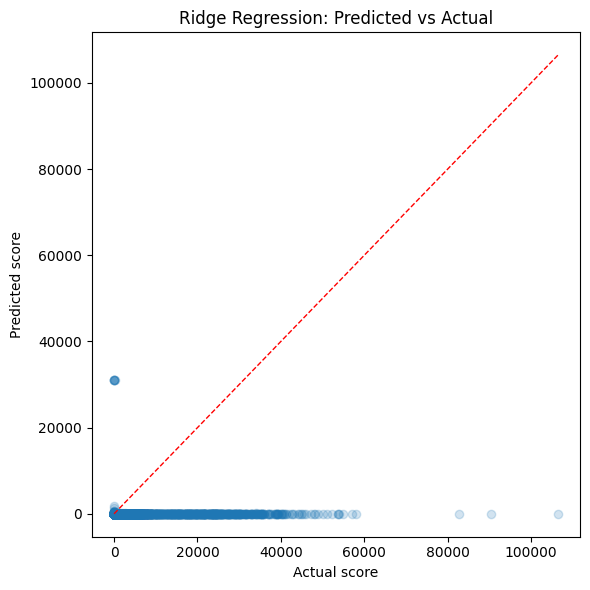

Predicting Humor with Machine Learning
Our goal with this project was to take the r/jokes dataset that we had selected and see if we could use it to predict whether a joke would be successful, or viral, using the joke text itself and the Reddit scores associated with them. To improve our chances of getting useful results, we did some simple preprocessing to prepare the entire dataset. This included removing jokes that had missing headings, text, or scores and removing whitespacing, capitals, and stopwords. We saved the number of capitals and punctuation marks in the event they were useful. Each methods used a unique form of tokenization as part of their preprocessing. HDBSCAN used Glove embeddings, since they were already pretrained. SVM and logistic regression used word2vec to extract possible new meanings from the jokes.



The lack of strong results of this project highlight the difficulty of approaching NLP tasks. Future work could include applying multiple layers of models to the data, using new preprocessing methods, or using a different tokenization method. Had the project been successful, we could feasibly see its concepts being applied to marketing analytics and online advertising. While we were not successful at achieving our original goal, this project was overall a useful learning experience.